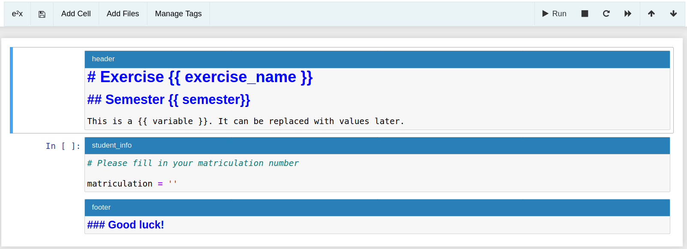
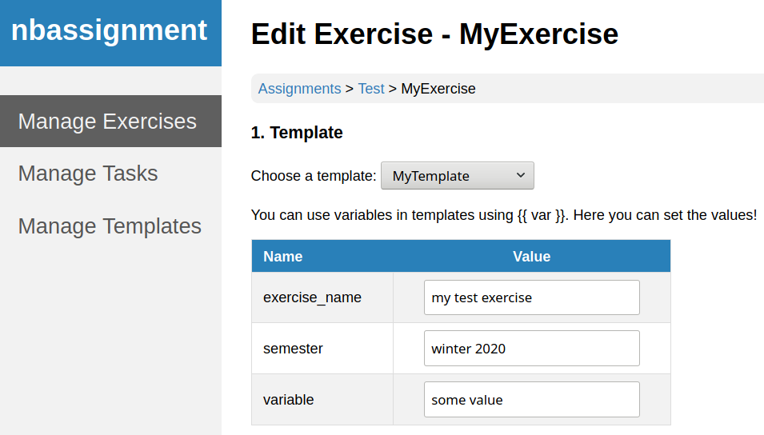
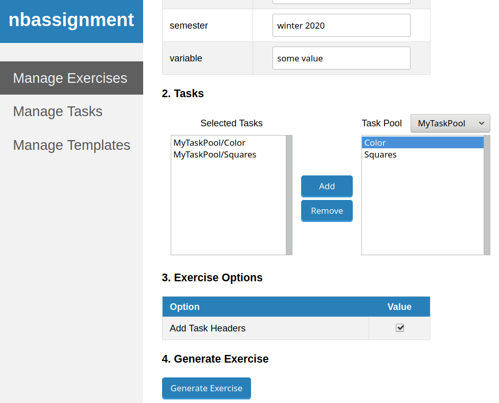
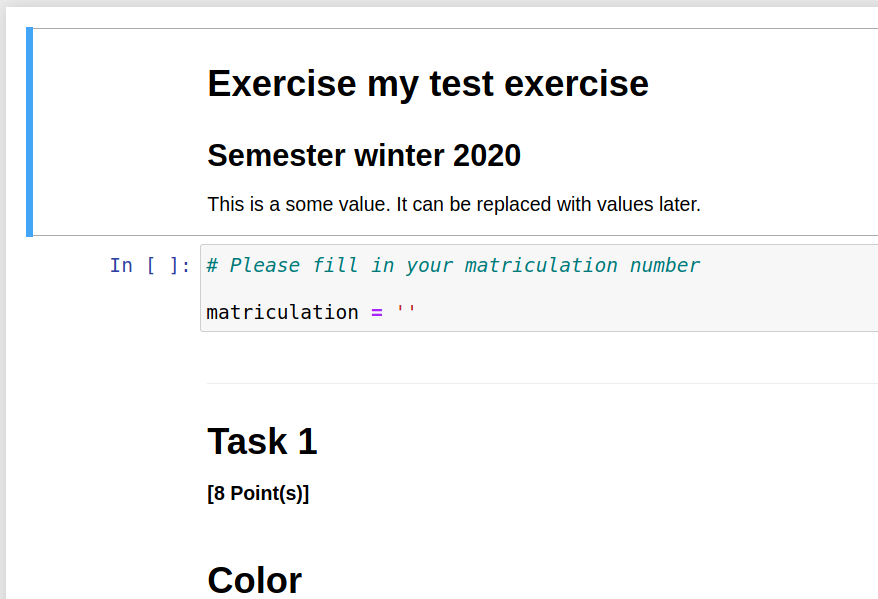

Nbassignment¶
Nbassignment is a package that helps in creating exercise notebooks from tasks and templates. The general process is to first define a template for notebooks, then create tasks which are organized in task pools and create notebooks from this.
Templates¶
A template predefines the structure of a notebook. It consists of header cells, footer cells and student info cells.
You can use variables in templates by enclosing the variable in double curly braces. When creating a notebook, these variables can be used.
To create a template, navigate to Manage Templates and click Add Template. This will create and open a Jupyter notebook. In the notebook there is a toolbar to add header specific cells.
In the figure below you see a template with a header, a footer and a student info cell. The header cell has the three variables exercise_name, semester and variable.
Tasks and Task Pools¶
Task pools are collections of tasks about the same topic. A task is a collection of questions that are dependent on each other.
To create a task pool, navigate to Manage Tasks and click Add Taskpool. Next add a task via Add Task. This will open a Jupyter notebook with a context dependent menu.
The task notebook will already have a header cell where you can give general information about the task. Via the Add Question menu, you can add questions such as Multiple Choice, Freetext or Code (Autograded).
If you want to add additional files to your task, you can do so via the Add Files menu. Images are supposed to go into the subfolder img, while other files go into the subfolder data. Filename collisions with other tasks will be resolved when creating an exercise.
Creating Exercises¶
Once we have a template and some tasks, we can create an exercise. For this we need to have created an assignment via nbgrader already.
To create an exercise, navigate to Manage Exercises and click Add Exercise. Next you need to select a template and some tasks. In the figure below the template described above was chosen. We can see that we can assign values to our template variables.
Next we need to select a task pool and then add all tasks we want in our exercise.
Finally we can add task headers to our exercise. Task headers are cells in between tasks that have information about the task number and the amount of points a task is worth.
After clicking the Generate Exercise button, the exercise is created.
All files needed by the exercise notebook will be located under /{exercise_name}_files. If two tasks use the same file, it will only appear once. If two tasks use a different file with the same name, the second file will be renamed and all references in the notebook will be updated.